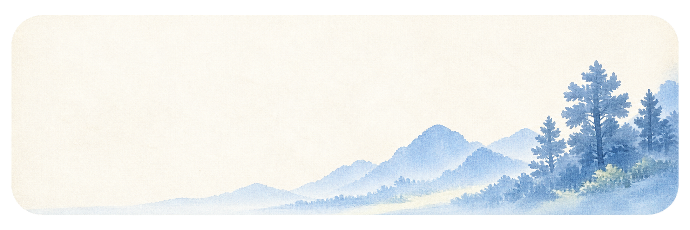
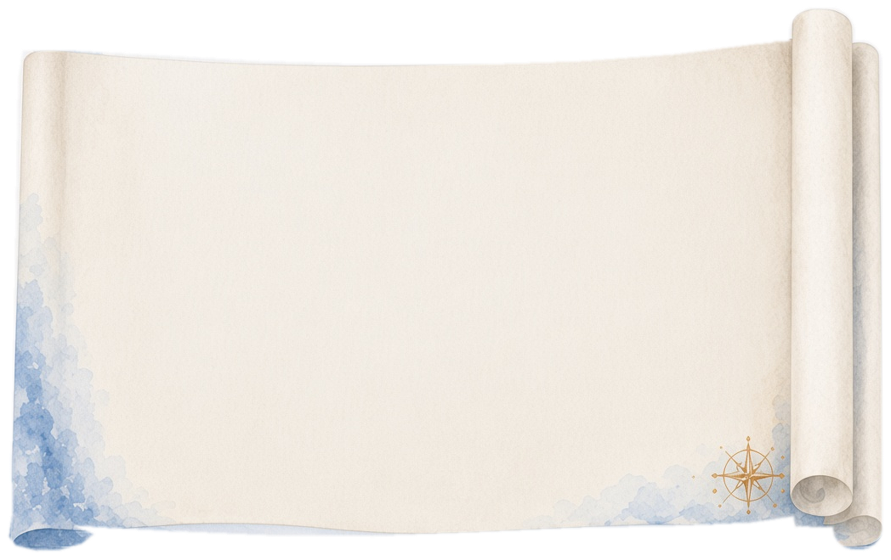

Trained in experimental science, I bring a lab scientist's rigor to a very human question: what experience should we build, and why?
Oregon State · Lanzhou · Beijing Film Academy
Preview lab for index-2 card 04. B — live in 2.0 (parchment + two columns). D — glass panel, chips inside, one-column proofs. E — parchment, chips outside. Click chips to switch panels.
Like your mock: 04 marker, chips inside the scroll crown, serif statement left, expanded proof details right, compass on the sheet. Card 03 shown above for context.

.practice areas
Frosted land backdrop in a rounded glass panel — chips in the crown, statement + proof bullets below (no parchment, no two-column split).
.practice areas
Chips card and parchment share the card-03 rail width instead of a wider centered scroll.

.practice areas